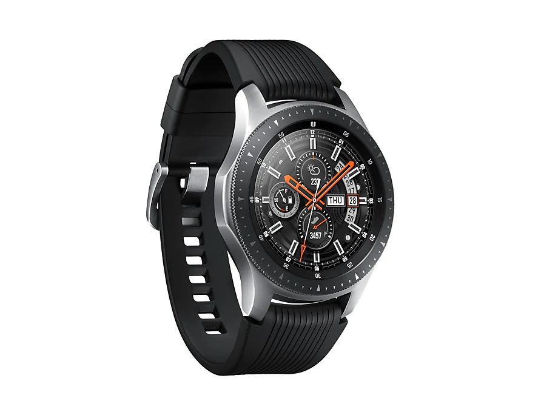

모두가 운동의 중요성을 알지만 모두에게 운동이 쉬운 건 아니죠.
갤럭시 워치는 트레이너처럼 운동에 집중 할 수 있도록 도와줍니다.
39가지의 운동 종목 중 트래킹이 가능하며,
운동하는 동안 심박수와 칼로리를 측정해줍니다.
또한 하나의 운동이 끝나고 다음 운동으로 이어할 수 있어
흐름이 끊기지 않고 혼자서도 체계적인 운동을
꾸준히 이어갈 수 있습니다.
* 달리기, 걷기, 자전거 타기, 일립티컬, 로잉 머신, 활동적인 운동 등 6가지는 별도의 조작을 하지 않고도 트래킹이 가능합니다. * 건강 관리와 운동을 위한 기능입니다. * 개인의 질병을 진단, 치료, 경감, 예방하는 등의 의료 목적으로는 사용될 수 없습니다. * 갤럭시 워치에서 삼성 헬스 앱을 사용하려면 호환 가능한 스마트폰에서 로그인을 해야 하며, 페어링 되어야 합니다. * 본 서비스와 관련된 GUI 는 사전 공지 없이 변경될 수 있습니다. * iOS 기반의 스마트폰과 연동하는 경우, 일부 기능이 제한될 수 있습니다.
스스로 확인하기 쉽지 않은 나의 건강 정보를 확인할 수 있다면 얼마나 좋을까요? 삼성 헬스 앱으로 스트레스 지수, 심박수와 칼로리 그리고 더 많은 건강정보를 기록하고 체크할 수 있습니다. 덕분에 건강 관리가 쉬워집니다.
* 건강 관리와 운동을 위한 기능입니다. * 갤럭시 워치에서 삼성 헬스 앱을 사용하려면 호환 가능한 스마트폰에서 로그인을 해야 하며, 페어링 되어야 합니다. * 개인의 질병을 진단, 치료, 경감, 예방하는 등의 의료 목적으로는 사용될 수 없습니다. * 트래킹 기능은 삼성 헬스 앱을 통해 제공되므로 앱 로그인과 갤럭시 워치와의 페어링이 필요합니다. * 본 서비스와 관련된 GUI는 사전 공지 없이 변경될 수 있습니다. * iOS 기반의 스마트폰과 연동하는 경우, 일부 기능이 제한될 수 있습니

어쩌면 가장 중요한 건 쉬어가는 것일지도 모릅니다. 잠을 제대로 못 이루거나 과도한 스트레스를 받을 때 내 몸의 건강 정보를 체크 할 수 있습니다. 당신이 잠든 사이 수면 상태를 측정해 4단계로 진단하고 스트레스 지수가 높을 때엔 스트레스를 낮춰주는 숨쉬기 가이드 제공으로 휴식을 도와줍니다.
* 건강 관리와 운동을 위한 기능입니다. * 갤럭시 워치에서 삼성 헬스 앱을 사용하려면 호환 가능한 스마트폰에서 로그인을 해야 하며, 페어링 되어야 합니다. * 스트레스 지수 및 수면기능의 지원 여부는 국가마다 다를 수 있습니다. * 본 서비스와 연관된 GUI는 사전 공지 없이 변경될 수 있습니다. * iOS 기반의 스마트폰과 연동하는 경우, 일부 기능이 제한될 수 있습니다.